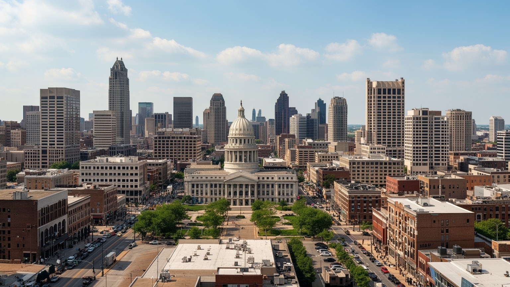
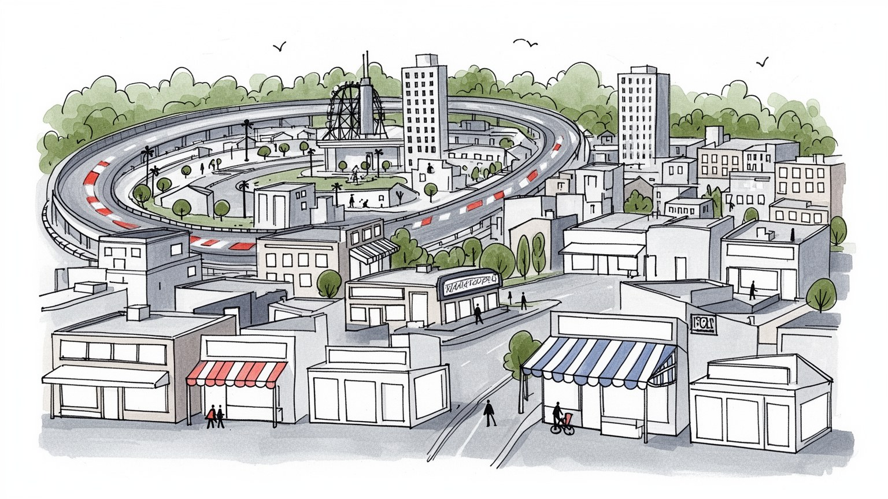
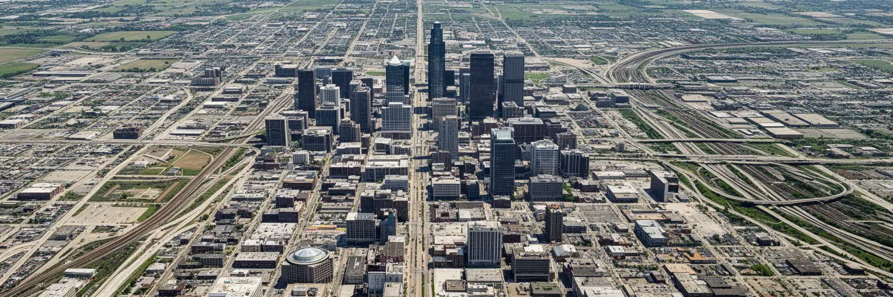
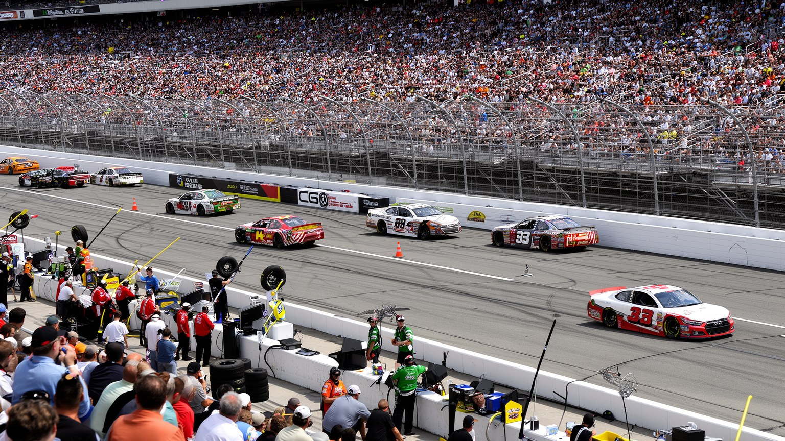
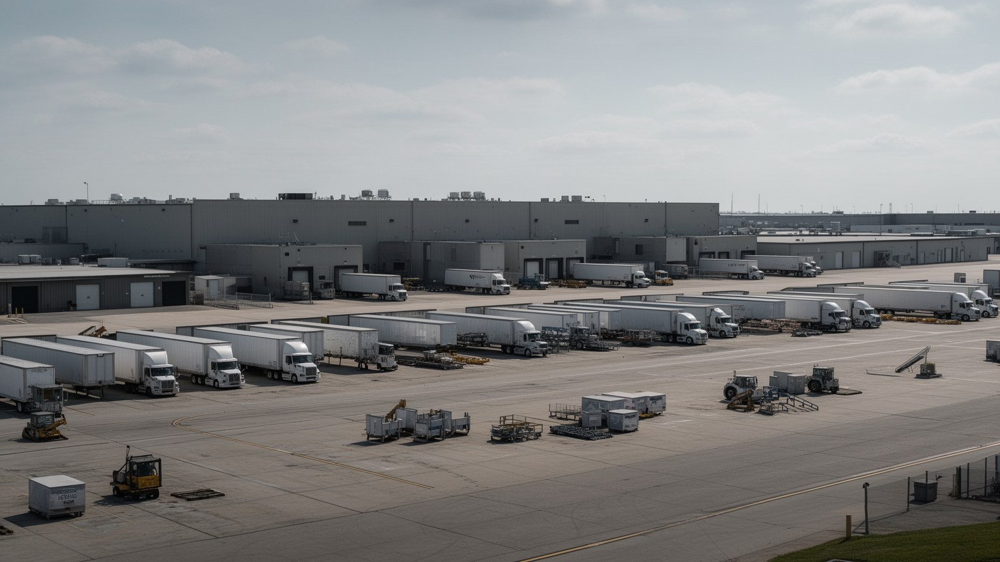
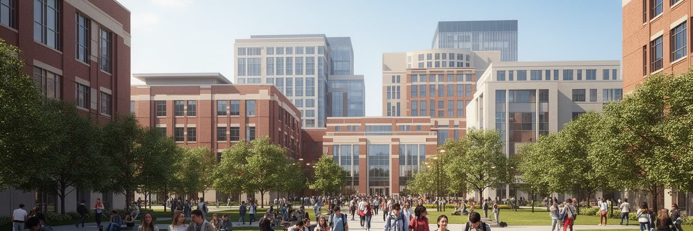
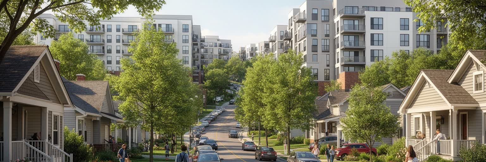
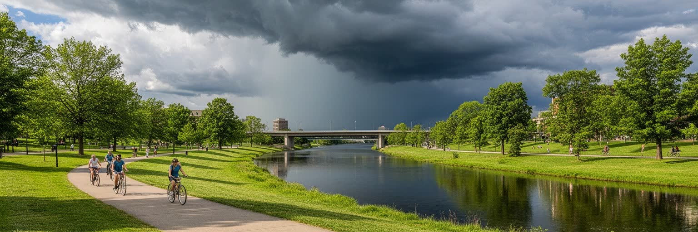
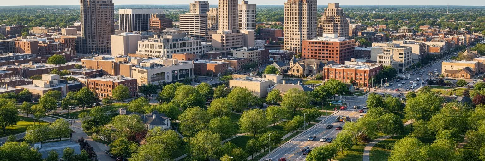

地政学
インディアナポリスは内陸にある州都で、州政府、裁判所、政党、ロビー団体が集まります。港湾ではなく道路と空港で外部へつながり、農業州、工業州、大学州の利害が都心の議事堂に集約される、州の実務都市です。

🇺🇸 アメリカ合衆国 / インディアナ州 / World City Atlas
中西部の州都であり、内陸の交通結節点、モータースポーツの聖地、医療と大学の拠点でもある都市です。州政治、倉庫物流、黒人コミュニティ、郊外化、スポーツ観戦、緑道整備が同じ平坦な市街地で重なります。
都市の骨格
インディアナポリスは海港を持ちませんが、州間高速道路、倉庫、空港、州政府、大学病院、競技施設が都市の中央に集まります。平坦な地形と広い道路は、スピードの文化と車依存の暮らしを同時に育ててきました。

インディアナポリスは内陸にある州都で、州政府、裁判所、政党、ロビー団体が集まります。港湾ではなく道路と空港で外部へつながり、農業州、工業州、大学州の利害が都心の議事堂に集約される、州の実務都市です。
倉庫、医療、大学、製薬、保険、州政府、製造業、スポーツ興行が雇用を支えます。専門職と配送、介護、清掃、ホテル、厨房、警備の仕事が近くにあり、低い生活費の魅力と賃金格差が同時に見える都市である日々です。
モータースポーツ、大学バスケットボール、黒人教会、ジャズの記憶、退役軍人の式典、郡フェアの感覚が街を形づくります。巨大な競技施設と近隣の礼拝所が、週末の人の流れをそれぞれ作る街です。音楽の夜も残ります。
旅行者はレース、運河、博物館、競技場を巡りますが、住民には車通勤、郊外化、歩道不足、冬の寒さ、夏の雷雨、貧困地区の投資不足が日常負担です。穏やかな中西部像の足元を見る都市です。買物の距離も重いです。

インディアナポリスを読む入口は、海港ではなく道路です。都市はインディアナ州のほぼ中央に置かれ、州間高速道路が放射状と環状に重なり、空港と倉庫群が広域配送の基盤を作ります。周囲はなだらかな平野で、鉄道、運河、農地、工場、住宅地が時代ごとに形を変えながら集まってきました。東西南北へ走りやすい地形は、州都を作る政治的な合理性と、物流を集める経済的な合理性を同時に与えました。都心のモニュメントサークルから道路が伸びる構造は、象徴的な中心を持つ一方で、日常の移動を自動車に強く依存させます。歩ける中心部と、広い駐車場、低密度の住宅、郊外商業の距離が大きく、誰が車を持てるかが機会の差になります。インディアナポリスの地理は、華やかな景観よりも、荷物、人、州内政治をどう集めて再配分するかに表れます。海に面さない都市でも、道路の結節点になれば全国経済へ深く組み込まれることを示す都市です。この配置は都市の性格を穏やかに見せながら、通勤、救急、通学、買物、選挙活動まで道路網に預けます。中心から離れるほど公共交通は弱くなり、郊外の広さは自由であると同時に孤立の条件にもなります。地図を読むと、速度が都市の利点であり、弱点でもあることが分かります。物流拠点の成長は、市域の外側にも雇用と交通量を広げます。どの地区が通過され、どの地区が結ばれるかに、内陸都市の公平性が表れます。
インディアナポリスは、経済都市である前に州都です。州会議事堂、行政機関、裁判所、政党、ロビー団体、法律事務所、報道機関が集まり、教育、税制、道路、農業、銃規制、医療、労働、宗教的価値観をめぐる州全体の議論が都心へ入ってきます。ワシントンの連邦政治ほど国際的に注目されなくても、州政府は住民の学校、保険、投票、刑事司法、土地利用に直接影響します。議会の会期、抗議集会、退役軍人の式典、記念碑の扱いは、街路の使われ方を変えます。中西部の保守的な郊外、工業地域、大学町、農村の利害が一つの都市に持ち込まれるため、インディアナポリスは州内の対立を映す鏡でもあります。都心再開発やスポーツ施設への公的投資をめぐっても、誰のための首都なのかが問われます。州都機能は安定した雇用を生みますが、政策決定の近さは格差や排除の責任も可視化します。中心部の記念碑を歩くことは、行政の建物だけでなく、州が何を価値として残してきたかを読むことでもあります。州都は平日の昼にだけ動く場所ではありません。裁判、免許、社会保障、教員、医療助成、警察予算の判断は、郊外や農村の家庭にも届きます。都市の中心が州全体を代表するとき、中心部の貧困や黒人地区の要求をどこまで政策に反映できるかが、首都としての信頼を左右します。州政治は抽象的な制度ではなく、バス停、学校、病院、投票所の距離として住民に経験されます。都心の首都性は、周辺の暮らしを扱って初めて意味を持ちます。

インディアナポリスを世界に知らしめた最大の記号は、インディアナポリス・モーター・スピードウェイです。五月のレースは単なるスポーツイベントではなく、都市の暦、家族の習慣、企業接待、観光収入、技術文化、ボランティア、警備、交通規制を一気に動かす祭りになっています。オーバルコースの巨大さは、自動車産業が二十世紀のアメリカで持った夢と危うさをそのまま示します。速さ、機械、危険、愛国的な式典、記念歌、ピット作業の緊張が、都市の誇りとして積み重なります。一方で、レース文化は化石燃料、騒音、広大な駐車場、事故、男性中心の語りとも結びつきます。近年は電動化、女性ドライバー、国際的な参加、環境対応を通じて、伝統をどう更新するかが問われています。レース場の周囲には修理工場、バー、ホテル、住宅地があり、イベントの熱気と普段の静けさの差が大きいです。インディアナポリスのモータースポーツは、観光名物である以上に、車社会の楽しさと負担を同時に映す都市の装置です。レースの週には民泊、露店、臨時雇用、警察、救急が一体で動き、地元の店は一年分の記憶を作ります。ですが混雑を避ける住民もおり、祭りの利益は均等ではありません。速度の祝祭を都市全体の公共性へどうつなげるかが、レース都市の課題になります。技術者や整備士の技能、ファンの世代継承、地域企業の協賛も、この文化を支えます。速さの舞台裏には、長い準備と細かな仕事があります。

インディアナポリスの経済を支える見えにくい基盤は、倉庫、空港貨物、トラック、製造、保険、医療事務、州政府の事務です。市の外縁には広い配送センターや工業団地が並び、夜間の仕分け、フォークリフト、長距離運転、梱包、整備、警備、清掃が都市の消費を支えます。高速道路の交差点にあることは企業にとって効率ですが、働く人にとっては車通勤、シフト制、身体負担、低賃金、季節変動の問題を伴います。都心のオフィスや競技施設が注目される一方、物流の仕事は郊外の大きな箱の中で進み、外から見えにくいです。製造業もかつての重工業だけでなく、部品、医療関連、食品、先端素材、保守サービスへ分かれています。経済開発は雇用数を強調しがちですが、仕事の質、交通手段、保育、技能訓練、労働安全を見なければ都市の豊かさは測れません。インディアナポリスの産業は、華やかな本社都市ではなく、物を動かし、州を運営し、病院と大学を支える実務都市として読む必要があります。配送の速さは消費者には便利ですが、労働者には歩数、重量、監視、短い休憩として経験されます。空港近くの成長が住宅地へ雇用をもたらす一方、バスが少ない地域では仕事へ届くこと自体が難しいです。産業政策は交通政策でもあります。さらに自動化が進むほど、必要な技能と失われる仕事の差が広がります。訓練機会を誰が得るかが、次の雇用格差を決めます。

インディアナポリスの成長を理解するには、医療と教育を外せません。インディアナ大学系の医療機関、研究施設、看護、薬学、バイオ、保険、公共衛生、地域クリニックが都市の中心的な雇用を作っています。病院は高度医療の場所であると同時に、清掃、調理、警備、搬送、事務、通訳、介護、研究補助が集まる巨大な職場でもあります。大学キャンパスは若者と研究費を呼び込み、都心周辺の住宅、飲食、交通、文化活動にも影響します。医療産業は安定して見えますが、保険制度、低所得者の受診、薬価、救急医療、医療債務、人員不足の問題を抱えます。黒人地区や低所得地区では、病院が近くても慢性疾患、食料アクセス、交通、予防医療の格差が残ります。大学と病院が再開発の核になるほど、土地価格の上昇や地域住民の置き去りにも注意が必要です。インディアナポリスの知識産業は、研究成果だけでなく、市民の健康をどこまで支えられるかで評価されます。医療と教育は都市の未来を開く一方、その恩恵が誰に届くかを問う分野でもあります。救急車が走る距離、保険証の有無、バスで通院できるか、健康な食料を買えるかは、研究棟の近さだけでは解決しません。大学が地域と結びつくほど、奨学金、実習、学校支援、雇用の入口を広げる責任も大きくなります。学生が卒業後も残るかどうかは、研究職だけでなく、家賃、交通、文化、地域の受け入れにも左右されます。知識都市は生活都市でもなければ続きません。
インディアナポリスの歴史は、州都やレースだけでは足りません。黒人住民の教会、学校、音楽、商店、新聞、市民運動は、都市の社会的な厚みを作ってきました。アベニュー地区にはジャズ、ナイトクラブ、黒人経営、移住者のネットワークの記憶があり、差別的な住宅慣行や高速道路建設、都市再開発によって分断された歴史も残ります。黒人教会は信仰の場所であると同時に、葬儀、食料支援、投票運動、教育、災害時の相談拠点として働いてきました。都市の中心が再開発されると、文化の記憶は記念碑や博物館として称賛される一方、当事者の住まいと商売が失われることがあります。警察、学校、医療、雇用、交通へのアクセスをめぐる不平等は、現在の都市政策にも続く問題です。インディアナポリスを読むには、モニュメントサークルの公式な記憶だけでなく、黒人地区の音楽、礼拝、抵抗、起業、家族の記憶を見る必要があります。都市の文化的な価値は、過去を飾るだけでなく、その地域に暮らす人の権利を守れるかで決まります。記憶を観光資源にするだけなら、街は語りやすくなりますが生活は戻りません。空き地、教会、学校跡、古い劇場、理髪店のような場所に残る関係を見れば、都市の歴史は制度の外側でも続いています。再開発の利益を誰が受け取るかが、記憶の扱いを試します。学校名、通り名、壁画、日曜礼拝に残る物語は、公式資料より長く地域をつなぎます。都市を深く読むには、その小さな継承を見逃さないことが必要です。

インディアナポリスは、比較的手頃な住宅価格で語られることが多い都市です。戸建て、庭、駐車場、郊外学校区は、中西部の暮らしやすさを象徴する一方、低密度の開発は車依存、歩道不足、公共交通の弱さ、中心市街地の空洞化を生んできました。広い家に住めることは魅力ですが、車を持てない高齢者、低所得世帯、障害のある人、若者には移動の壁が大きいです。郊外の新しい分譲地と、投資が不足した古い地区の差は、学校、食料品店、医療、治安、資産形成の差につながります。都心では集合住宅や改装された倉庫が増え、歩いて暮らす選択肢も広がっていますが、家賃上昇とホームレス問題も目立ちます。住宅政策は安い土地を広げるだけでは解決しません。バス路線、歩道、自転車道、保育、近所の商店、公共空間を組み合わせて初めて生活の質が上がります。インディアナポリスの住まいを読むことは、アメリカ内陸都市が抱える手頃さと分散の矛盾を読むことでもあります。広さの価値を保ちながら、孤立しない都市へ変われるかが課題になります。固定資産税、修繕費、暖房費、車の維持費を含めれば、安い住宅も必ずしも軽い負担ではありません。古い家を直す資金や融資へのアクセスも地区で差があります。住まいの問題は、価格だけでなく、暮らしを支える接続の問題です。子どもが安全に歩ける道、近所の診療所、食料品店、図書館がそろうかで、同じ価格の家の意味は変わります。住宅地の価値は、家そのものより生活圏で決まります。
インディアナポリスの週末は、スポーツと食で都市の性格が見えます。アメリカンフットボール、バスケットボール、大学スポーツ、モータースポーツの試合日は、都心のホテル、バー、駐車場、レストラン、警備、清掃、交通が一斉に動きます。競技場は観光装置であると同時に、市民の誇りや地域経済政策の象徴でもあります。公費で支えられた施設が本当に住民へ利益を返すのかは、雇用の質、周辺開発、交通、チケット価格で判断されます。食文化は派手ではありませんが、豚肉料理、ステーキ、ダイナー、クラフトビール、移民の食堂、ファーマーズマーケットが、州の農業と都市の日常を結んでいます。近年はメキシコ系、南アジア系、アフリカ系、東南アジア系の店も増え、都市の移民構成を映します。試合日のにぎわいは明るいが、厨房、皿洗い、配達、ホテル清掃、深夜の片付けがその裏側にあります。インディアナポリスのスポーツ文化を読むことは、観客席の熱狂だけでなく、都市が公共投資と労働をどう組み合わせて楽しみを作るかを見ることです。地元の食堂はファンの集合場所になり、大学の応援歌や家族の席取りが街の季節感を作ります。ですが中心部のイベント経済が郊外や貧困地区へどれだけ波及するかは別の問題です。楽しさを地域全体の利益に変える設計が必要になります。食と競技は観光の顔であると同時に、移民労働、農産物流通、夜間交通を映す鏡でもあります。祝祭の裏側まで見ると、都市の週末は立体的になります。

インディアナポリスの気候は、四季がはっきりしています。夏は蒸し暑く雷雨が多く、冬は寒波と雪、凍結が生活を遅らせます。春の嵐、竜巻を伴う荒天、豪雨による浸水、暑熱、老朽化した排水設備は、内陸都市の大きな条件です。平坦な地形は移動を容易にする一方、水が滞りやすい場所では住宅や道路に被害を出します。ホワイト川、運河、モノン・トレイル、文化トレイル、公園は、散歩や自転車、観光だけでなく、都市を冷やし、水を受け止め、人が車以外で移動するための基盤になります。緑道の整備は中心部の魅力を高めますが、沿線の地価上昇で低所得住民を押し出す危険もあります。気候対応は、樹木を植えることや美しい遊歩道を作ることだけでは足りません。雨水管理、日陰、避難所、公共交通、住宅の断熱、高齢者の見守り、浸水地の投資を合わせて考える必要があります。インディアナポリスの環境政策は、快適な中西部の街という印象の下で、暑さと水と寒さにどう備えるかを問う実務です。緑道は観光写真の背景である前に、通勤路、避難路、運動の場、近隣を結ぶ社会的な線になります。誰でも安全に使える照明、除雪、交差点、ベンチ、トイレがあって初めて、公共空間は気候対策として機能します。気候リスクは地区ごとに違い、古い住宅や低地ほど負担が大きいです。緑の整備が美化で終わらず、弱い地区の安全へ届くかが問われます。

インディアナポリスは、世界金融の中心でも巨大港湾でもありませんが、アメリカ内陸都市の重要な型を見せます。州都として制度を集め、道路と空港で物を動かし、レースとスポーツで全国的な記憶を作り、大学病院と物流で雇用を広げます。平坦で広い都市は暮らしやすく見えますが、その広さは車を持てない人の不便、郊外と中心部の格差、歩道やバスの不足も生みます。黒人コミュニティの歴史、教会、音楽、再開発の痛みを重ねると、公式な州都の記念碑だけでは読めない都市の層が現れます。観光客はレース場、運河、博物館、競技場を訪れますが、都市の核心は、倉庫の夜勤、病院のシフト、州議会の決定、郊外の通勤、緑道沿いの住宅価格にあります。インディアナポリスを読むことは、派手なグローバル都市の外側で、現代アメリカの政治、労働、車社会、医療、スポーツ、住宅問題がどのように組み合わさるかを読むことです。中心の円形記念碑から外へ広がる道路をたどると、都市の誇りと負担が同じ方向へ伸びていることが分かります。この都市の強さは、見栄えのする象徴よりも、実務を集める粘り強さにあります。だから評価するときは、大会の日の熱狂だけでなく、平日のバス停、病院の待合室、倉庫の夜勤、教会の食料支援、郊外の学校まで視野に入れる必要があります。大都市圏の派手さは控えめでも、州を動かす制度と日常労働が近い距離にあります。そこにインディアナポリスの読みごたえがあります。